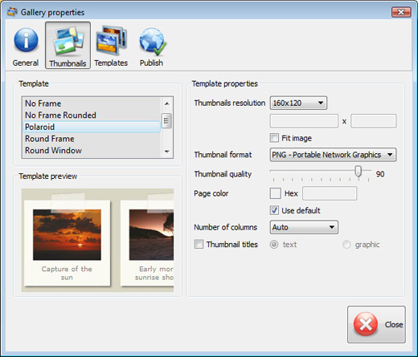

Javascript Window Onload


Overview
Popular LightBox and Thickbox, JavaScript widgets to show content in modal windows, are outdated at the moment. They are not updated since 2007. There are some great alternatives - colorbox, jQueryUI Dialog, fancybox, DOM window, shadowbox, but we highly recommend you to try VisualLighbox - Lighbox Alternative. VisualLighbox is packed with a dozen of beautiful skins, fantastic transition effects and free gallery generator software for Mac and Windows!
Top Features See all features...Synchronous Messagebox Extjs
2013-05-09
- Flickr & Photobucket support
- jQuery plugin or Prototype extension
- Floating and smooth cross-fade transition
- Slideshow with autostart option
- Windows & MAC version
- XHTML compliant
- Zoom effect with overlay shadow
- Rounded corners of overlay window
- Large images fit to browser window
- A lot of nice gallery themes
- Image rotating and hi-quality image scaling with anti-aliasing
- Automatic thumbnail creation
- Adding caption
- Built-in FTP
How to Use See all features...Jquery Shadowbox Alternative
Step 1. Adding images to your own gallery.
From the Images menu, select Add images.... Browse to the location of the folder you'd like to add and select the images. You can also use Add images from folder... and Add images from Flickr options.

Visual LightBox JS will now include these pictures. Or you can drag the images (folder) to the Visual LightBox window. The image is copied to your pictures folder and automatically added to your website gallery.

If you have included the photos that you do not wish to be in your web gallery, you can easily remove them. Select all images that you wish to remove from photo gallery, and select Delete images. from the Images menu. You can pick and choose pictures by holding the CTRL while clicking the pictures you like.
Step 2. Adding caption.
When you select an image you'll see the various information about it, such as:


Step 3 - Editing capabilities.
In this website gallery software you can easily rotate your pictures using "Rotate Left" and "Rotate Right" buttons.

Right click on the picture and select "Edit images.." item to open the selected picture in your default graph editor. You can adjust the color of pictures, as well as fix red-eye and crop out unwanted parts of an image.
Step 4. Gallery properties.
Change the name of your album, the size and quality of your pictures with jQuery Thickbox Alternative. From the Gallery menu, select Properties or use "Edit Gallery Properties" button on the toolbar.
On the first tab of the Gallery Properties window you can change the name of your photo album and enable/disable the following properties: Slide Show, Auto play Slide Show, Zoom effect, Overlay Shadow. You can also set the Overlay shadow color and select the Engine you want to use (jQuery or Prototype + script.aculo.us).

On the second tab of the Gallery Properties window you can select the thumbnail you want to use, set the Thumbnails Resolution, Thumbnails Quality, Thumbnails Titles. Select Thumbnails Format (save in PNG or JPG format). Specify the Number of columns in you photo album and the Page color.

On the third tab of the Gallery Properties window you can select the template, Image resolution and Image quality of your pictures and change the Watermark.

You can set up the various sizes for exported images.

Control the quality of output PNG or JPEG format image by defining output "Image quality" and "Thumbnail quality" parameters (0%...100%).

Step 5 - Publishing of the jQuery Thickbox Alternative.
When you are ready to publish your website photo album online or to a local drive for testing you should go to "Gallery/Publish Gallery". Select the publishing method: publish to folder or publish to FTP server.

You are able to add a new FTP site by clicking "Edit" to the right of the "Publish to FTP server" drop down list. FTP Location Manager window will appear. Now type in a meaningful (this is not the actual hostname) name for your site and fill in the FTP details in the appropriate fields. You will have to type in your hostname, e.g. domain. The FTP port is normally located on port 21 thus this has been prefilled for you already. If your web site uses another port, you will have to enter it here.
Type in your username and password for the connection. If you do not fill in this information, Visual LightBox is unable to connect to your site and thus not able to upload your gallery to website. If this site enables anonymous connections, just type in anonymous as the username and your e-mail address as the password.
You might want to change the Directory as well if you need to have your uploaded images placed in e.g. "www/gallery/". You can specify it in the FTP Folder field on the Publish Gallery window.
Notice: Write the name of the folder where your website gallery will be placed on the server. Notice that you should specify this field; otherwise your website album will be uploaded into the root folder of your server!
Step 6. Save your photo gallery as project file.
When you exit jQuery Thickbox Alternative application, you'll be asked if you want to save your project. The project consists of the pictures you choose to put on your web photo gallery and all your settings. It's a good idea to save the project, because that will allow you to change the project in case you decide to do something different with future galleries. So click Yes, then enter a name for your project. To select the location of your project, just click the Browse folders button and choose a different location. Then click Save.
Step 7 - Add Visual LightBox inside your own page.
Visual LightBox generates a special code. You can paste it in any place on your page whereyou want to add image gallery.
* Export your LightBox gallery using Visual LightBox app in any test folder on a local drive.
* Open the generated index.html file in any text editor.
* Copy all code for Visual LightBox from the HEAD and BODY tags and paste it on your page in the HEAD tag and in the place where you want to have a gallery (inside the BODY tag).
<head>
...
<!-- Start Visual LightBox.com HEAD section -->
.....
<!-- End Visual LightBox.com HEAD section -->
... </head>
<body>
...
<!-- Start Visual LightBox.com BODY section -->
.....
<!-- End Visual LightBox.com BODY section -->
...</body>
* You can easily change the style of the templates. Find the generated 'engine/css/vlightbox.css' file and open it in any text editor.
Download JavaScript Window See all features...Javascript Window Frame
| for Windows | for MAC |
DHTML Popup Free Trial can be used for free for a period of 30 days.
If you would like to continue using this product after the trial period, you should purchase a Business Edition. The Business Edition additionally provides an option to remove the VisualLightBox.com credit line as well as a feature to put your own logo to images. After you complete the payment via the secure form, you will receive a license key instantly by email that turns the Free Trial Version into a Business one. You can select the most suitable payment option: PayPal, credit card, bank transfer, check etc.
ajax window widget
|
| |||||||||||||||||||||||||||||||
Support See all features...Javascript Ie Window Size
For troubleshooting, feature requests and general help contact Customer Support. Make sure to include details on your browser, operating system, Visual LightBox version and a link (or relevant code). javascript popup ajax window
Feedback See all features...Shadowbox Form
* I would like to say that Visual LightBox is a stunning lil program! Its almost too good to be true i'd say! I've been looking for tutorials to create a lightbox gallery, but just couldnt come right. Im so glad i found Visual LightBox!
* Just a quick thank you for the software though, It's not often you get a free software version of this quality and style! Well done and please continue this amazing gallery. Hope to see more advances.
* Just bought the business version of Visual LightBox and I just had to write and say how impressed I am with it. Really easy to use, intuitive interface and generates a truly professional presentation. Seldom have I been so pleased with a software purchase. Thank you.sliding dhtml info box
* Let me start just congratulating you, good job, really. I am trying out the free version before I buy it. It works great.
FAQ See all features...Openengine Alternatives
Q:I would like to center all the thumbnails and I cannot figure out how.Can you please help?
A:Try to use <div> tag or <table> tag to center your thumbnails. Light Box Alternative generates a special code.
Just paste it in <div> tag.
You can also place in <dierates a special code.
Just paste it in <div> tag.
You can also place in <div> tag your iframe.
And then use the alignment that you ned.
DEMO's


Screenshot

Awards


How To's
Highslide Facebox 1 2 Free Download
Rapidweaver
Shadowbox Contain Message In Asp Net
Joomla Pdf Shadowbox
Getting Browser Window Handle
Lightbox With Thumbnail Scroller
Using Shadowbox
Jquery Highslide Example
Javascript Get Window Height
Javascript For Opening New Window
Highslide Mediaplayer Swf Chrome
Highslide Dim Not Working
Highslide Latest Style With Example
Highslide Refresh Instance
Replace Shadowbox For Thickbox
Javascript Photo Properties
Shadowbox Plays Video Slowly
Window Parent Refresh Client
Lightbox Sample Page
Individual Thumbsize Highslide Joomla
Copyright © 2013 All rights reserved.